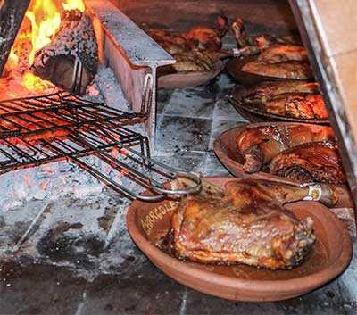
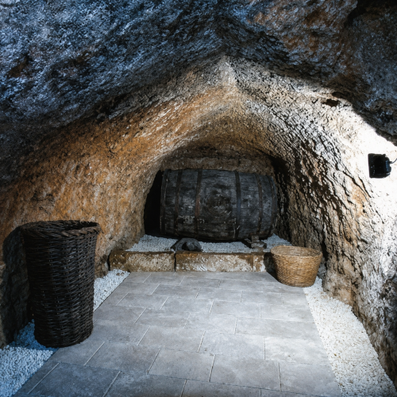
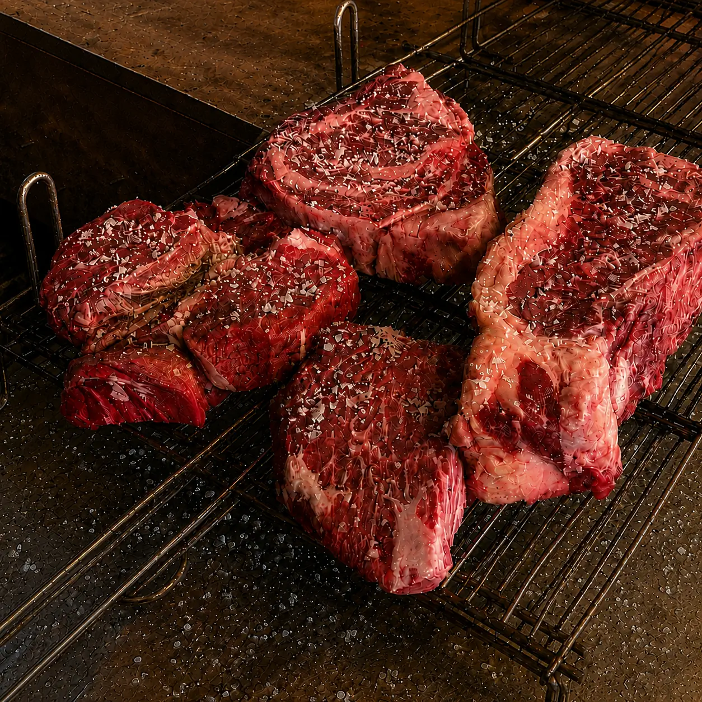
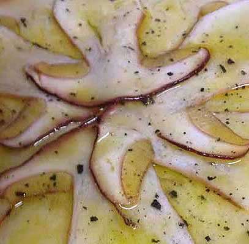
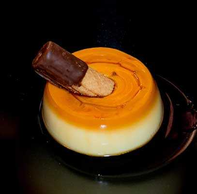

Découvrez
L’AGNEAU DE LAIT DE LERMA
À l’Asador Caracoles, vous pouvez déguster l’un des produits les plus prestigieux de notre gastronomie locale :
Agneau de lait rôti au four à bois

SAVEURS DE SAISON
Pour tous les amateurs de bonne cuisine, Asador Caracoles est une référence.
Cuisine traditionnelle castillane et produits de saison de la vallée de l’Arlanza.
Viandes rouges de première qualité grillées sur notre brasero.



